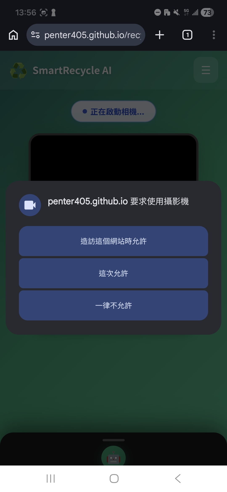
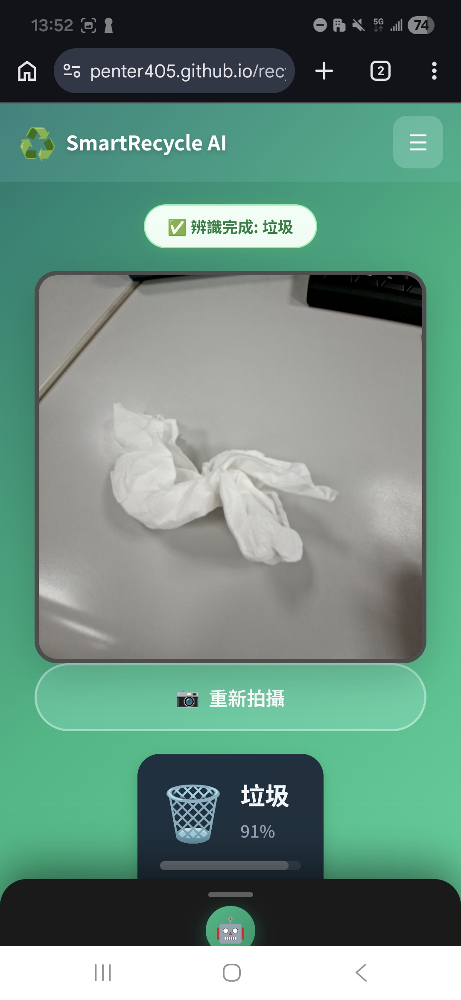
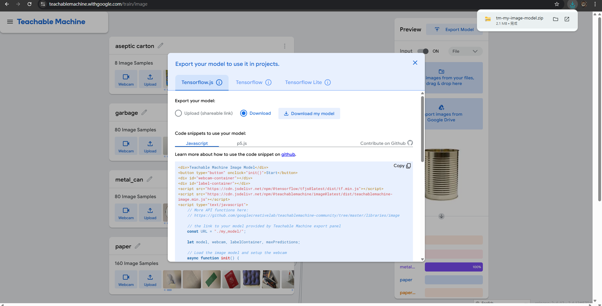
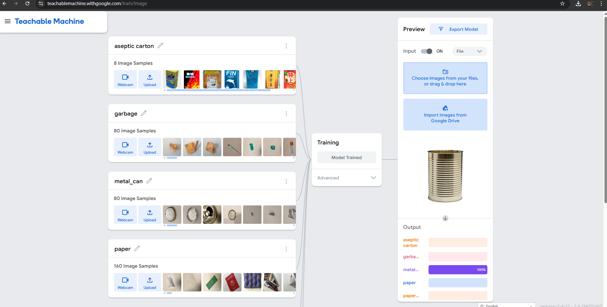
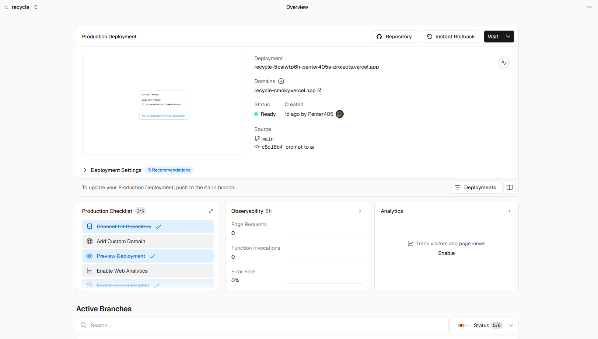
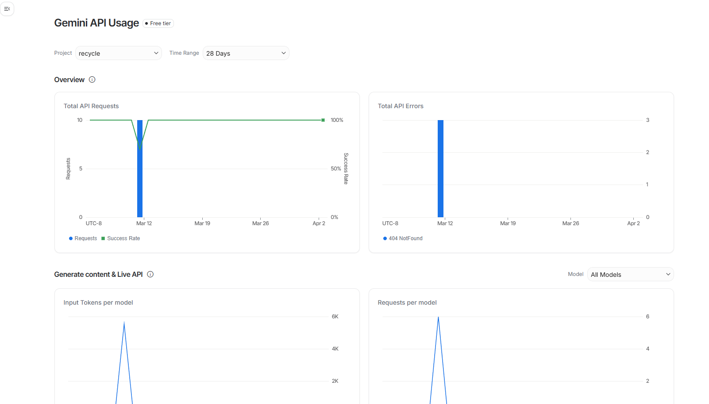

系統流程圖與操作截圖對照 - 雙分支版
設定
顯示設定
排列方向
橫向顯示 flawchart
直向顯示 flawchart
直圖片大小
150
橫圖片大小
220
開始程式
打開網頁初始化
DOMContentLoaded
使用手機鏡頭取得圖片
請求相機權限
顯示影像串流

圖片
擷取當前影格
凍結相機預覽

使用 TM 演算法分析
載入 TM 模型
執行 model.predict()

結果 (Local)
最高機率類別
判斷閾值 (70%)
螢幕與喇叭告知結果
顯示卡片
語音播報
AI Chat 分析
送入 AI 處理
提取特徵與意圖

Serverless + API
呼叫 Vercel
Google API 處理

Response
獲得雲端結果
顯示最終解答

程式是否被關閉？
選擇繼續或離開
否
繼續辨識
↩ 回到取得圖片
是
結束程式
×